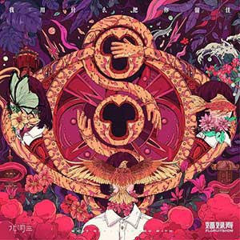
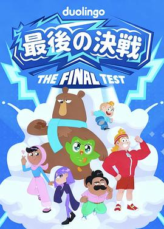
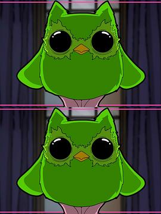
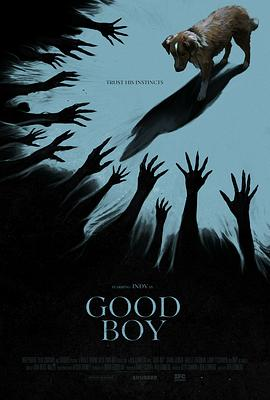
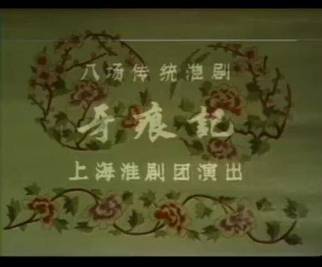
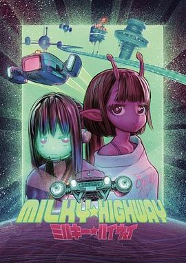
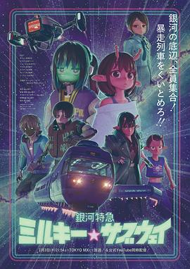

广播
共 65 个月
2293 条广播
其中 1543 条带正文
广播发布后不可编辑，所以每条都是那一刻的原话。
2025-10-30 11:33:40
豆瓣原页
 玩过 海绵宝宝：潮汐巨神 SpongeBob SquarePants: Titans of the Tide ★★★☆☆
玩过 海绵宝宝：潮汐巨神 SpongeBob SquarePants: Titans of the Tide ★★★☆☆
要是双人的就好了。
2025-10-29 23:51:27
豆瓣原页
 看过 胆大党 第二季 / ダンダダン 第2期 ★★★★☆
看过 胆大党 第二季 / ダンダダン 第2期 ★★★★☆
作画依旧很顶，ed的环绕镜头好有创意。只是剧情未有亮点了。牛尾的音乐真好听。邪视篇有些无聊了。（2025, 10, 18，momo摸四眼仔的手的时候反而我全身酥麻磕得发齁。）（2025, 10, 26，jiji自己没实力兜底的任性实在教人心梗。）
2025-10-29 19:01:14
豆瓣原页
 在读 克林索尔的最后夏天 ★★★★☆
在读 克林索尔的最后夏天 ★★★★☆
蛮喜欢口袋本的装帧的。开篇的导语太多余。
2025-10-28 15:05:36
豆瓣原页
关注片单 Moncler温暖与共主题片单
2025-10-28 15:03:57
豆瓣原页
看过 尽头是大海深红 ★★★☆☆
言之无物的视觉表现。
2025-10-28 15:00:31
豆瓣原页
 看过 克里斯托弗·罗宾 / Christopher Robin ★★★☆☆
看过 克里斯托弗·罗宾 / Christopher Robin ★★★☆☆
其实小猪的缝线无时无刻不在间离着告诉我们这一切都是假的。
2025-10-28 10:41:39
豆瓣原页
 读过 败北女主太多了！1 ★★★★☆
读过 败北女主太多了！1 ★★★★☆
整本书质感还是蛮不错的，虽然故事看过多遍，依旧喜欢开头yanami的我行我素。
2025-10-27 15:18:43
豆瓣原页

在听 我用什么把你留住 ★★★★☆
没想到除了同名主打歌，还有一首《马》比较好听。
2025-10-27 15:17:47
豆瓣原页
 听过 SSSS.DYNAZENON CHARACTER SONG.1 ★★★☆☆
听过 SSSS.DYNAZENON CHARACTER SONG.1 ★★★☆☆
麻中蓬的角色歌其实不太好听，反而梦芽的声音很动听。
2025-10-27 15:17:33
豆瓣原页
 听过 深海少女 -deep sea girl- (feat. 初音ミク) ★★★★☆
听过 深海少女 -deep sea girl- (feat. 初音ミク) ★★★★☆
remix后更符合时代潮流了。
2025-10-25 17:57:47
豆瓣原页
看过 阳光俱乐部 ★★★★☆
小晓明哥的影帝是实至名归，科长唱歌还蛮好听的，廖凡怎么这次还当警察。魏大导演知道哪些镜头怎么拍才好看，但他不怎么会讲故事，反而这些生硬的叙述使情绪被推到了谷底。医生最后有求于鸡，阳光终究不是解药，是错觉。
2025-10-22 23:55:24
豆瓣原页

看过 最后的决战 / The Final Test ★★★☆☆
小水番。拽姐可爱捏。
2025-10-22 18:03:33
豆瓣原页
 听过 underclass HERO - Single ★★★☆☆
听过 underclass HERO - Single ★★★☆☆
没上一首亮眼。
2025-10-22 00:14:25
豆瓣原页
想看 反复无常的夏天 / Rozmarné léto
稍后再看的遗珠。
2025-10-21 09:42:30
豆瓣原页
在读 败北女主太多了！1 ★★★★☆
整本书质感还是蛮不错的，虽然故事看过多遍，依旧喜欢开头yanami的我行我素。
2025-10-21 00:02:14
豆瓣原页

看过 多邻国，错过了今日课程后果很严重 / The Tongue Stealer ★★★☆☆
害怕。
2025-10-20 23:49:24
豆瓣原页
在看 最后的决战 / The Final Test ★★★☆☆
小水番。拽姐可爱捏。
2025-10-19 16:28:15
豆瓣原页
看过 狼溪 / Wolf Creek ★★☆☆☆
曾在地方卫视上看完全片，当时也无聊，就像现在一样，就算剧情平平也能看完了。
2025-10-19 16:21:08
豆瓣原页

看过 好狗狗 / Good Boy ★★★☆☆
从布景上就能看出这是一部小成本电影，但悬疑氛围营造得不错。从动物电影来说，太需要导演和剪辑对春秋笔法这是技巧的熟稔了。比较赞同的解释是恐怖皆为狗狗的感官放大。
2025-10-19 10:56:42
豆瓣原页
看过 ダラケ! 〜お金を払ってでも見たいクイズ〜 ★★★☆☆
代标stars-232。
2025-10-19 10:34:01
豆瓣原页
 读过 横道世之介 ★★★★☆
读过 横道世之介 ★★★★☆
月份为章节，顺叙着世之介平凡又不凡的人生。我真是羡慕他的世界观呀，简简单单的。（2025, 10, 19，最后世之介母亲的信教人动容。）
2025-10-18 16:24:35
豆瓣原页
 看过 一战再战 / One Battle After Another ★★★★★
看过 一战再战 / One Battle After Another ★★★★★
节奏上比《血色将至》好很多，全部看下来一点也不枯燥。音乐塞得好满，基本没停过。标志的大横移镜头炉火纯青。可怜的鲍勃被玩弄在股掌之间。自由难不成就是去责任化么，不能吧。
2025-10-17 15:00:53
豆瓣原页
 听过 忘れてください ★★★★☆
听过 忘れてください ★★★★☆
非常喜欢里面的断奏与拿不拿的和声。
2025-10-17 14:57:44
豆瓣原页
 听过 D o n’ t L a u g h I t O f f ★★★★☆
听过 D o n’ t L a u g h I t O f f ★★★★☆
《cure》好听些。
2025-10-17 14:22:47
豆瓣原页
 听过 more than words (期間生産限定盤) ★★★★☆
听过 more than words (期間生産限定盤) ★★★★☆
开头的鼓点很中听。
2025-10-17 13:38:35
豆瓣原页

看过 牙痕记 ★★★★★
相较于《灰阑记》与布莱希特改编过后的《灰阑记》，这里给生母养母的断案提供了一种新的思路，那就是几家并成一家。李氏的哭腔好使人伤心哦。
2025-10-16 21:18:47
豆瓣原页
 听过 梦的河流 ★★★★★
听过 梦的河流 ★★★★★
《流星》的最后我还以为网络卡顿了。整张专辑用了好多非常规的声音效果哦，没想到同名主打歌居然还有彩蛋轨。
2025-10-14 19:30:13
豆瓣原页
 想看 暗恋桃花源 / 暗戀桃花源
想看 暗恋桃花源 / 暗戀桃花源
轮椅在原地打转。
2025-10-14 09:03:09
豆瓣原页
想看 牙痕记
2025-10-14 09:02:59
豆瓣原页
想看 克里斯托弗·罗宾 / Christopher Robin
2025-10-13 22:36:18
豆瓣原页
看过 K-Car战争 ★★★☆☆
在事无巨细的方面日本人还蛮会的。就是没想到国内比较热门居然是SUV。
2025-10-13 17:27:55
豆瓣原页
在听 SSSS.DYNAZENON CHARACTER SONG.1 ★★★☆☆
麻中蓬的角色歌其实不太好听，反而梦芽的声音很动听。
2025-10-13 14:03:03
豆瓣原页
 听过 JANE DOE ★★★★☆
听过 JANE DOE ★★★★☆
宇多田的声音一出场我就酥软了。
2025-10-13 14:02:52
豆瓣原页
 听过 菲靡靡之音 ★★★★★
听过 菲靡靡之音 ★★★★★
喜欢《南海姑娘》与《但愿人长久》。歌后似歌后，我感动。
2025-10-13 14:02:28
豆瓣原页
看过 浮生一戏 ★★★★☆
与电影场景的呼应做得很好，色彩设计亮眼。
2025-10-13 14:01:58
豆瓣原页
看过 半夜叫你别回头 ★☆☆☆☆
小时候在优酷看的，悬崖边掉下的人偶也太假了。
2025-10-12 23:00:37
豆瓣原页
看过 浮生一戏 ★★★★☆
与电影场景的呼应做得很好，色彩设计亮眼。
2025-10-12 14:45:19
豆瓣原页
看过 志愿军：浴血和平 ★★★★☆
蛮好的一个落幕，就是泪点太多反倒导致感动的阈值被提高了。超人醒的徒弟居然也是超人。彭昱畅演得真少年，喜欢他。闫妮还是醉醺醺的模样。
2025-10-11 23:37:14
豆瓣原页
 在听 不可思議のカルテ ★★★★☆
在听 不可思議のカルテ ★★★★☆
第一句很抓耳，整体旋律好悠扬。
2025-10-11 16:03:51
豆瓣原页
在听 菲靡靡之音 ★★★★★
喜欢《南海姑娘》与《但愿人长久》。歌后似歌后，我感动。
2025-10-11 16:03:45
豆瓣原页
听过 菲靡靡之音 ★★★★★
喜欢《南海姑娘》与《但愿人长久》。歌后似歌后，我感动。
2025-10-11 10:46:22
豆瓣原页
 在读 法兰西内战 ★★★★★
在读 法兰西内战 ★★★★★
恩格斯好喜欢夸他的老马啊。
2025-10-10 23:32:14
豆瓣原页

看过 银河☆高速公路 / ミルキー☆ハイウェイ ★★★☆☆
简单小毕设，渲染得还不错。
2025-10-10 23:31:36
豆瓣原页
 听过 情绪未响应 ★★★★★
听过 情绪未响应 ★★★★★
实在钟爱编曲的键盘，与最后的合唱。
2025-10-10 23:30:27
豆瓣原页

看过 银河特急 银河☆地铁 / 銀河特急 ミルキー☆サブウェイ ★★★★☆
蛮有趣的小动画。假如世界观的设定展开来讲讲就好了。最后变成铁胆火车侠也太生草了吧www。
2025-10-10 15:03:54
豆瓣原页
 看过 杰出公民 / El ciudadano ilustre ★★★★☆
看过 杰出公民 / El ciudadano ilustre ★★★★☆
片单第十部。昨晚正好公布了诺文学奖的获得者，今天便很巧地看了这部电影。真是人红是非多啊，简直是对游子乡愁的最好祛魅了。拍得像纪录片，没想到还有牛头人剧情。
2025-10-09 20:01:38
豆瓣原页
看过 过五关 ★★★☆☆
没有什么新意。
2025-10-09 20:01:12
豆瓣原页
看过 想和你一起听听歌 ★★★☆☆
布景依旧厉害，但故事太老派了。
2025-10-09 02:27:16
豆瓣原页
在看 银河特急 银河☆地铁 / 銀河特急 ミルキー☆サブウェイ ★★★★☆
蛮有趣的小动画。假如世界观的设定展开来讲讲就好了。
2025-10-08 22:32:59
豆瓣原页
 看过 风林火山 / 風林火山 ★★★☆☆
看过 风林火山 / 風林火山 ★★★☆☆
车祸翻转镜头我还在《涉过愤怒的海》里见识过，这种感觉给人颠倒黑白。摄影只为表达出一种视觉奇观，故事言之无物，下雪的香港更是个中看不中用的背景板。八年时间摄影都把命拍进去了，也不知道生后得知观众这番反应会有怎么想法。
2025-10-08 18:47:41
豆瓣原页
 听过 HALO ★★★★☆
听过 HALO ★★★★☆
电电的，不适合多听。
2025-10-08 18:47:18
豆瓣原页
 听过 水槽の街から (I_006_lyric) ★★★★☆
听过 水槽の街から (I_006_lyric) ★★★★☆
在剧场版里这首太亮眼。
2025-10-07 17:17:24
豆瓣原页
看过 戏台 ★★★★☆
这里的长镜头根本不是为了场面调度开拍的，终归到底还是陈老能力不足只得像看话剧一样全面地拍出来，另外每个人的腔调也像话剧那样说台词，太违和。故事有了原作打底，很好，最后废墟里唱戏好落寞。
2025-10-05 15:04:13
豆瓣原页
 听过 二次元律动 Anime Grooves Vol.3 ★★★★☆
听过 二次元律动 Anime Grooves Vol.3 ★★★★☆
好一个改编，有层次，有创新。但其实大部分已经听不出原来的主弦了。
2025-10-03 15:16:24
豆瓣原页
 听过 加油最卖力的女同学(feat. 洛天依) - Single ★★★★☆
听过 加油最卖力的女同学(feat. 洛天依) - Single ★★★★☆
喜欢封面的回答。
2025-10-03 15:15:57
豆瓣原页
 听过 那个没有你存在的世界 - Single ★★★★☆
听过 那个没有你存在的世界 - Single ★★★★☆
很朋克的乐队。
2025-10-03 15:15:36
豆瓣原页
 听过 想和你迎着台风去看海(feat. 洛天依) - Single ★★★★☆
听过 想和你迎着台风去看海(feat. 洛天依) - Single ★★★★☆
很chill的洛天依的嗓音，非常值得一听。
2025-09-30 12:16:16
豆瓣原页
在看 胆大党 第二季 / ダンダダン 第2期 ★★★★☆
作画依旧很顶，ed的环绕镜头好有创意。只是剧情未有亮点了。
2025-09-29 23:04:58
豆瓣原页
 看过 胆大党 先行上映版 / Dan Da Dan: First Encounter ★★★★☆
看过 胆大党 先行上映版 / Dan Da Dan: First Encounter ★★★★☆
第一季前三集。配乐比较动听。
2025-09-29 23:03:24
豆瓣原页
 看过 小城日常 / CITY THE ANIMATION ★★★★★
看过 小城日常 / CITY THE ANIMATION ★★★★★
又是熟悉的京阿尼的日常演出。这次还会是叫好不叫座么。第一集笑点不多，单单为了介绍CITY。第二集上古兵器友情客串，开心。（2025, 8, 5，第五集的九个分镜好牛。传统的清明上河图又回来啦。特摄风的双子塔搭景，现在的动画不能只是画了，都开始创新了。最后原来这个还是个典故啊。）（2025, 8.11，少女面罩下的哭脸是令人动容的。）（2025, 9, 1，长镜头太炫了，很厉害。）（2025, 9, 8，反复横跳的下次预告笑死人。少年终于放下了情结么。）（2025, 9, 22，重新认识就是为了告别时不会流泪么。）（2025, 9, 29，最后一集好多callback。使用歌队结尾反而使告别不落寞了呢。京阿尼谢谢你呀！）
2025-09-29 16:52:10
豆瓣原页
在听 想和你迎着台风去看海(feat. 洛天依) - Single ★★★★☆
很chill的洛天依的嗓音，非常值得一听。
2025-09-29 16:50:20
豆瓣原页
 看过 1921
看过 1921
台词有些喊口号化了，不接地气了。
2025-09-29 11:36:21
豆瓣原页
 听过 第二集 ★★★★☆
听过 第二集 ★★★★☆
从第二首歌开始居然让闭眼的我回到了高中，而回去的我所做的第一件事就是主动离开加多宝，以防现在的我沉湎在过去。
2025-09-29 11:05:32
豆瓣原页
在听 二次元律动 Anime Grooves Vol.3 ★★★★☆
好一个改编，有层次，有创新。
2025-09-29 11:04:50
豆瓣原页
 听过 Singing! (通常盤） ★★★★☆
听过 Singing! (通常盤） ★★★★☆
《おはよう、またあした》里充满着好悲伤的味道。
2025-09-29 11:04:36
豆瓣原页
 听过 君の知らない物語 ★★★★☆
听过 君の知らない物語 ★★★★☆
夜空里闪烁星海下的爱恋。
2025-09-29 11:02:45
豆瓣原页
在听 Singing! (通常盤） ★★★★☆
《おはよう、またあした》里充满着好悲伤的味道。
2025-09-28 16:09:03
豆瓣原页
想看 杰出公民 / El ciudadano ilustre
2025-09-28 15:19:35
豆瓣原页
 看过 蜘蛛侠：英雄无归 / Spider-Man: No Way Home ★★★☆☆
看过 蜘蛛侠：英雄无归 / Spider-Man: No Way Home ★★★☆☆
最喜欢不过斯特兰奇博士的能力，小汤姆也是在太调皮了吧。“能力越大责任越大”说出来之后必死无疑么。三代同框实属难得之景，反派的重演亦是经典。托比cue了一下《超凡蜘蛛侠》的“amazing”，结果加菲没反应过来好好笑哦。加菲接住了MJ但还是没办法让格温回来的神情让我遗憾得揪心。英雄故事一定要这样草草率率么。
2025-09-28 11:56:56
豆瓣原页
 读过 病隙碎笔 ★★★★☆
读过 病隙碎笔 ★★★★☆
加多宝送我的小书，一直没机会读抑或读完。大概是生病的缘故，铁生对上帝的看法很浓重。到最后也没明白加多宝所说的“它”到底指涉的是什么。
2025-09-27 23:39:39
豆瓣原页
 看过 知晓天空之蓝的人啊 / 空の青さを知る人よ ★★★☆☆
看过 知晓天空之蓝的人啊 / 空の青さを知る人よ ★★★☆☆
实在无法共情叛逆期的小孩姐了，好像我也变成了长成臭马脸的大人了呢。akane才是最辛苦的那个吧。最后的那句台词好惊人，天空真蓝啊。
2025-09-27 17:33:35
豆瓣原页
 看过 金刚不坏 / Death Proof ★★★☆☆
看过 金刚不坏 / Death Proof ★★★☆☆
一个女强人的小爽片，但是节奏有些问题，也有很多穿帮。出现了很多经典元素，例如昆汀的客串、口哨曲的铃声、挡风玻璃下的大脏脚与后备箱视角。
2025-09-27 00:55:26
豆瓣原页
 看过 神奇4侠：初露锋芒 / The Fantastic Four: First Steps ★★☆☆☆
看过 神奇4侠：初露锋芒 / The Fantastic Four: First Steps ★★☆☆☆
典型的三段式结构，从介绍再到困难的出现后小小的内讧最后完美地解决问题都无一例外地典型。母亲的力量就这么可笑地放大了，没意思。
2025-09-26 15:28:09
豆瓣原页
 看过 腓尼基计划 / The Phoenician Scheme ★★★☆☆
看过 腓尼基计划 / The Phoenician Scheme ★★★☆☆
实际上比前一部观感好了太多了，剧情也比较有意思，只是想不明白包括上一部《小行星城》里为什么一定要母亲的角色处于缺位状态呢。卷福的造型好笑人。兄弟俩的打斗戏中居然出现了跟随镜头，真难得。
2025-09-26 08:54:13
豆瓣原页
 看过 月亮残片 ★★☆☆☆
看过 月亮残片 ★★☆☆☆
莫名其妙的吻戏。
2025-09-25 15:00:35
豆瓣原页
 听过 Sinners ★★★★☆
听过 Sinners ★★★★☆
前奏进鼓的时机很掐人。
2025-09-24 22:00:08
豆瓣原页
收藏小组讨论到豆列 理解
1️⃣什么是戛纳场刊
电影节期间有一些媒体会每日发布实体刊物，更新每日市场交易新闻，这些刊物就是“场刊”，最有名的比如银幕场刊（Screen Daily）、好莱坞报道者、综艺（Variety）、法国的Le Film Francais等等。
戛纳作为A类世界排名第一的电影节，它不仅承担着评奖的职能，还是世界最大…
（豆瓣在这里截断了，全文不在档案里）


2025-09-23 23:07:20
豆瓣原页
在读 横道世之介 ★★★★☆
月份为章节，顺叙着世之介平凡又不凡的人生。我真是羡慕他的世界观呀，简简单单的。
2025-09-23 16:24:35
豆瓣原页
 听过 TVアニメ「ワンダーエッグ・プライオリティ」オリジナル・サウンドトラック Vol. 2 ★★★★☆
听过 TVアニメ「ワンダーエッグ・プライオリティ」オリジナル・サウンドトラック Vol. 2 ★★★★☆
喜欢第二十四《new world》，电子乐的鼓点真动听。
2025-09-23 16:24:32
豆瓣原页
 听过 TVアニメ「ワンダーエッグ・プライオリティ」オリジナル・サウンドトラック Vol. 1 ★★★★☆
听过 TVアニメ「ワンダーエッグ・プライオリティ」オリジナル・サウンドトラック Vol. 1 ★★★★☆
喜欢第十四《brand-new world》。
2025-09-23 16:24:04
豆瓣原页
在听 JANE DOE ★★★★☆
宇多田的声音一出场我就酥软了。
2025-09-23 15:29:28
豆瓣原页
 看过 更衣人偶坠入爱河 第二季 / その着せ替え人形は恋をする Season 2 ★★★★☆
看过 更衣人偶坠入爱河 第二季 / その着せ替え人形は恋をする Season 2 ★★★★☆
剧情比较硬核，只是作画非一般地顶，令我瞠目结舌。首集的摄影很强势，在新菜自我怀疑的那幕戏里，双马尾小妹的歌声由浅至深地渗入，很有点意思。vvns的ed真精致。（2025, 8, 5，第一十七集的真实的人偶演出真有趣。）（2025, 9, 17，第二十二集通过少女的脚趾扣住她自己的小心思的地方真是太可爱了。）（2025, 9, 23，可惜我JuJu大人的感情戏了。）
2025-09-23 14:56:50
豆瓣原页
 看过 过春天 ★★★★☆
看过 过春天 ★★★★☆
青春总是与犯罪纠缠不清呀，城市的喧嚣也更适合情绪的宣泄呀，雪糕筒踢起，生活又鸡飞狗跳了起来。画面很会捕捉氛围，海边街灯的光晕尤其好看。iPhone还蛮热门的呢。
2025-09-22 23:41:05
豆瓣原页
 读过 喬瑟與虎與魚群 ★★★★☆
读过 喬瑟與虎與魚群 ★★★★☆
有点像报刊上爱情小说的文风。喜欢《行李已打包好》这一篇。（2025, 9, 21，终于读到这篇被改变多次的文章了，但是主要人物很少，重点在乔瑟的身上和其与管理员的感情。）（2025, 9, 22，《马芬蛋糕》里的连大叔也太变态了吧。）
2025-09-22 23:06:59
豆瓣原页
 看过 渺渺 ★★★★☆
看过 渺渺 ★★★★☆
摄影很有想法。求求女主能不能爱惜点CD，不要随便放在架子上好么。没想到是两对同性的故事，车上的“一个爱着我的人和我爱过的人”的形容好贴切。榕容姐这时候好嫩呀。《旅行的意义》放在最后真能烘托情绪，一部清新的失恋电影就这样诞生了。可我和主动删除声音的陈飞不同，我的什么也没留下是真的什么也没有。
2025-09-22 15:30:23
豆瓣原页
 看过 夏日幽灵 / サマーゴースト ★★★☆☆
看过 夏日幽灵 / サマーゴースト ★★★☆☆
真是一部空有皮囊的作品，故事太单薄，设定也不合理，绚香的幽灵存在只因为尸体的执念，最后凉学长的幽灵又怎么解释呢。敞开讲，插画的水平动起来也不怎么好看。
2025-09-22 14:33:05
豆瓣原页
 想看 大红灯笼高高挂
想看 大红灯笼高高挂
2025-09-22 14:32:54
豆瓣原页
 想看 我是你爸爸
想看 我是你爸爸
2025-09-22 12:09:19
豆瓣原页
 听过 浪人情歌 ★★★★★
听过 浪人情歌 ★★★★★
《牵挂》太抓耳，估计我唱不好。主打歌很好听，编曲很克制。《钢铁男子》的歌词教人落泪。《来不及》蛮轻松欢快的。《199玫瑰》的桥很好听，重章叠句式地推动情感。《继续堕落》的尾奏给我听爽了。我即将成为浪人踏上新的冒险了。
2025-09-22 12:08:13
豆瓣原页
 听过 エガクミライ ★★★☆☆
听过 エガクミライ ★★★☆☆
旋律不出色。
2025-09-21 23:06:25
豆瓣原页
 看过 邓南遮占领阜姆自由邦 / Fiume o morte! ★★★★☆
看过 邓南遮占领阜姆自由邦 / Fiume o morte! ★★★★☆
扮演邓南遮穿帮的笑场，进阜姆时乐队的演奏，无不试图将观众从历史叙事中间离出来，告诉他们这只是演员的日常并非过去的灾难。拍摄很有创意，但困在了平铺直叙中，缺少对法西斯一定的批判。
2025-09-21 19:35:30
豆瓣原页
 想看 顺流逆流 / 順流逆流
想看 顺流逆流 / 順流逆流
伍佰与徐克。
2025-09-21 17:57:39
豆瓣原页
在听 TVアニメ「ワンダーエッグ・プライオリティ」オリジナル・サウンドトラック Vol. 2 ★★★★☆
喜欢第二十四《new world》，电子乐的鼓点真动听。
2025-09-21 17:46:04
豆瓣原页
 看过 酷爱电影的庞波小姐 / 映画大好きポンポさん ★★★★☆
看过 酷爱电影的庞波小姐 / 映画大好きポンポさん ★★★★☆
真是一封真挚的给电影的情书呀。判断一部电影好坏的出发视角居然是制片人么，不过的确忙前忙后最多的是制片人了。剪辑时的与素材结合的平行蒙太奇效果很棒，作画上也有很多高技术力的亮点，就是银行会议里说服的那一段太单薄了站不住脚。最后居然有动画内制作公司的彩蛋。
2025-09-20 18:21:36
豆瓣原页
 看过 731 ★★☆☆☆
看过 731 ★★☆☆☆
对此题材来说过于商业化了，似乎想诞生什么情愫，但什么也没出来。但实话实说，虽然造型太过干净，摄影却蛮好的。
2025-09-19 22:36:46
豆瓣原页
 看过 青春猪头少年不会梦到红书包女孩 / 青春ブタ野郎はランドセルガールの夢を見ない ★★★☆☆
看过 青春猪头少年不会梦到红书包女孩 / 青春ブタ野郎はランドセルガールの夢を見ない ★★★☆☆
知道是想说明母亲的不容易，可最后哭泣的时候父亲该怎么办。麻衣桑真是温柔呀，师傅依旧言辞犀利。作画上有时会迷之三渲二，只能可圈可点。
2025-09-19 10:48:20
豆瓣原页
 读过 喬瑟與虎與魚群 下 ★★★☆☆
读过 喬瑟與虎與魚群 下 ★★★☆☆
车祸莫名其妙，结尾还是太过童话了。
2025-09-17 18:00:30
豆瓣原页
 看过 小行星城 / Asteroid City ★★★☆☆
看过 小行星城 / Asteroid City ★★★☆☆
主要问题是形式大于内容，太空洞，整个画面除了色调鲜艳和构图平衡外毫无故事性可言。但戏中戏与画幅的变化依旧绑定剧情，在那个公共澡堂的地方使用了莫名其妙的间离手法，“突转-发现”使用得也很生硬，看得出来韦斯是想拍出一部戏剧与之外创作的电影，可是太无聊。亮点在原来关门之后说再见会让悲伤的氛围延宕下去。同时最后类歌队的吟诵“you can’t wake up if you don’t fall asleep”直至谢幕，场景与第一幕相同还蛮有意思的。开头介绍小城的环绕长镜头很好玩。
2025-09-16 20:11:34
豆瓣原页
 看过 俄狄浦斯王 ★★★★★
看过 俄狄浦斯王 ★★★★★
老师放的是小泽征尔指挥的版本，里面的道具与布景充满了符号化的意味。这个歌剧也太悲凉了。
2025-09-15 22:58:13
豆瓣原页
 玩过 喵斯快跑 Muse Dash ★★★★☆
玩过 喵斯快跑 Muse Dash ★★★★☆
不好评价的打击判定。
2025-09-15 22:50:03
豆瓣原页
 看过 76天 / 76 Days ★★★★☆
看过 76天 / 76 Days ★★★★☆
比较客观地记录了方方面面。哽咽是我最不能接受的悲伤，那会让我落泪的。
2025-09-14 23:43:19
豆瓣原页
 看过 僵尸 / 殭屍 ★★★★☆
看过 僵尸 / 殭屍 ★★★★☆
用完美自洽的概念来营造的可怖氛围着实吓到了我。尤其转盘时“土”的攻击让我眼前一亮。到底是借僵尸讲人性，里面满是落寞的痕迹。
2025-09-14 17:33:30
豆瓣原页
 看过 我在颐和园等你 ★★★☆☆
看过 我在颐和园等你 ★★★☆☆
2025-09-14 13:44:45
豆瓣原页
 看过 火红的青春 ★★★★☆
看过 火红的青春 ★★★★☆
十分红处竟成灰，被抛弃的理想还能被关注么。艺术风格比较独特。
2025-09-14 10:54:09
豆瓣原页
 想读 承诺
想读 承诺
2025-09-13 23:13:52
豆瓣原页
 看过 同甘共苦 / Together ★★★★☆
看过 同甘共苦 / Together ★★★★☆
这也太惊悚了，影像给了感官新的体验。所谓的“合体”究竟是指感情上的手足同心的具象化么。我还能想象没有另一半的生活么。
2025-09-12 23:28:53
豆瓣原页
听过 TVアニメ「ワンダーエッグ・プライオリティ」オリジナル・サウンドトラック Vol. 2 ★★★★☆
喜欢第二十四《new world》，电子乐的鼓点真动听。
2025-09-12 23:08:49
豆瓣原页
 看过 想哭的我戴上了猫的面具 / 泣きたい私は猫をかぶる ★★★☆☆
看过 想哭的我戴上了猫的面具 / 泣きたい私は猫をかぶる ★★★☆☆
女主做任何事包括喜欢的动机都不明朗，说到底她到底有多少个名字哦。结尾居然诞生了一个败犬，拿不拿的歌真好听，但剧情真是烂得一塌糊涂呀。
2025-09-10 22:21:14
豆瓣原页
 读过 喬瑟與虎與魚群 上 ★★★★☆
读过 喬瑟與虎與魚群 上 ★★★★☆
与动画别无二致，除了电车上乔西关心的是热气球而不是飞机。落花与葬礼的转场很好，有些地方画得稍微有点崩坏。
2025-09-10 17:11:09
豆瓣原页
 看过 死神来了5 / Final Destination 5 ★★★☆☆
看过 死神来了5 / Final Destination 5 ★★★☆☆
没想到还是个前传，只是文戏太差了。
2025-09-10 15:25:35
豆瓣原页
 看过 死神来了4 / The Final Destination ★★★☆☆
看过 死神来了4 / The Final Destination ★★★☆☆
太套路了这部，况且死亡方式有了预告并毫无新意，最后甚至用一段动画取代。明明嘴上说着安全却横穿马路，好戏谑。
2025-09-09 23:37:39
豆瓣原页
 看过 Jose与虎与鱼们 / ジョゼと虎と魚たち ★★★★☆
看过 Jose与虎与鱼们 / ジョゼと虎と魚たち ★★★★☆
实话说我才开始读田边老师的短篇集，所以这部电影的原作我仍然不知全貌。但电影与动画的改编太大了，这里也太现实了，就连Jose想去看本续集都要等别人扔出去而非同动画里一样可以去图书馆里借阅。真不敢想象一个故事拍出了两种味道。
2025-09-08 11:39:24
豆瓣原页
在听 浪人情歌 ★★★★★
《牵挂》太抓耳，估计我唱不好。主打歌很好听。
2025-09-08 11:38:03
豆瓣原页
 读过 化物語 上 ★★★★☆
读过 化物語 上 ★★★★☆
物语故事最重要的开场。
2025-09-08 11:36:34
豆瓣原页
 在玩 菲拉 Phira ★★★★☆
在玩 菲拉 Phira ★★★★☆
社区的谱子有好多高质量的。
2025-09-08 11:35:28
豆瓣原页
 玩过 双人成行 It Takes Two ★★★★★
玩过 双人成行 It Takes Two ★★★★★
和加多宝玩的第一款游戏，虽然从下载steam再到注册账号花了不好时间，但最后还是连麦玩上。很多操作都需要两个人一起才能实现，非常有巧思。最后去年暑假里和王九打通关了。
2025-09-08 11:34:05
豆瓣原页
 读过 進擊の巨人 34 ★★★★☆
读过 進擊の巨人 34 ★★★★☆
当时请假在家追完了漫画，实话说关于那棵树的意象从故事开端能一直圆到合理的结局是很厉害的创作能力了。谏山创对那个世界建构再解构，只不过结尾不符合完美主义罢了。
2025-09-08 11:29:32
豆瓣原页
 听过 The Feels ★★★☆☆
听过 The Feels ★★★☆☆
资料库里唯一首k-pop。
2025-09-08 11:26:30
豆瓣原页
 听过 今年も「雪降り、メリクリ」目指して頑張ります！！ ★★★★☆
听过 今年も「雪降り、メリクリ」目指して頑張ります！！ ★★★★☆
full ver.里圣诞曲的变调融合得恰到好处。
2025-09-08 11:24:12
豆瓣原页
 听过 恋爱困难少女 ★★★★☆
听过 恋爱困难少女 ★★★★☆
对苏轼词句的化用教人拍案叫绝。
2025-09-08 08:49:08
豆瓣原页
关注片单 Burberry光影英伦主题片单
2025-09-07 23:55:37
豆瓣原页
 看过 我失去了身体 / J’ai perdu mon corps ★★★★☆
看过 我失去了身体 / J’ai perdu mon corps ★★★★☆
一整部太艺术了，到头来就讲明白了一件事：“人生不如意十有八九”。一开始在画面上就喜欢藏了一手，与断手回家的经历构成平行蒙太奇叙事。男孩比我勇敢，他甚至能主动去找女孩。画手走路要对手的结构该有多了解呀。音乐很入画。
2025-09-03 22:53:57
豆瓣原页
在读 喬瑟與虎與魚群 ★★★★☆
有点像报刊上爱情小说的文风。
2025-09-03 21:36:10
豆瓣原页
 看过 死神来了3 / Final Destination 3 ★★★☆☆
看过 死神来了3 / Final Destination 3 ★★★☆☆
故事开始老套了起来，除了日光浴，结尾与死法都别无新意
2025-09-03 19:37:34
豆瓣原页
在读 喬瑟與虎與魚群 上 ★★★★☆
与动画别无二致，除了电车上乔西关心的是热气球而不是飞机。
2025-09-03 18:40:42
豆瓣原页
 看过 生化危机5：惩罚 / Resident Evil: Retribution ★★★☆☆
看过 生化危机5：惩罚 / Resident Evil: Retribution ★★★☆☆
和老爸一起看的。看过不止两遍。
2025-09-03 17:54:15
豆瓣原页
 看过 怪兽大学 / Monsters University ★★★★☆
看过 怪兽大学 / Monsters University ★★★★☆
在金鹰卡通看的。
2025-09-03 17:32:18
豆瓣原页
 看过 死神来了2 / Final Destination 2 ★★★★☆
看过 死神来了2 / Final Destination 2 ★★★★☆
血腥镜头变多了，死神似乎毫不留情。死神随风来的设定真吓人。
2025-09-03 14:40:09
豆瓣原页
 看过 死神来了 / Final Destination ★★★★☆
看过 死神来了 / Final Destination ★★★★☆
作为首部来说很有巧思，死法上偶有创意，只是最后结局圆不下去了。
2025-09-02 22:48:47
豆瓣原页
 看过 乔西的虎与鱼 / ジョゼと虎と魚たち ★★★★☆
看过 乔西的虎与鱼 / ジョゼと虎と魚たち ★★★★☆
就算剧情上有很多的槽点，但并不妨碍我喜欢或者说中意这个故事。不明白为何要给很幸福的男主安排个车祸使其实际感受乔西的情绪，这样也太耍赖了吧。店里的后辈一开口就是输了。《小美人鱼》的童话讲得与故事很契合。
2025-09-02 16:01:52
豆瓣原页
 看过 垫底辣妹 / ビリギャル ★★★☆☆
看过 垫底辣妹 / ビリギャル ★★★☆☆
天才的逆袭果然对普通人来说励志不了一点。里面没有不讲理的坏人才是生活自怡的关键。
2025-09-02 13:17:35
豆瓣原页
收藏评论到豆列 理解 談開頭
2025-08-31 23:32:26
豆瓣原页
 看过 死神来了：血脉诅咒 / Final Destination: Bloodlines ★★★★☆
看过 死神来了：血脉诅咒 / Final Destination: Bloodlines ★★★★☆
依托最新的技术做出的逼真的死亡效果教我胆战心惊，我就不该在晚上将睡觉的时候看这部电影。一寸光阴一寸金，就是结尾太潦草了些。
2025-08-30 16:11:20
豆瓣原页
 看过 坏蛋联盟2 / The Bad Guys 2 ★★★★☆
看过 坏蛋联盟2 / The Bad Guys 2 ★★★★☆
所以胖东来为有犯罪前科人员留有岗位真的是很目光长远了。蛇哥被搓成气球的时候我要笑死了。Diane与狼仔的纠缠真有意思，我活着就是为了看他们的接吻。不知不觉就变成了福瑞控，尤其穿着黑高跟西装裤白衬衫的狐狸。小豚鼠怎么还苟着，难道有第三部的计划么。狼仔好喜欢不合时宜的meta哦，只是这次的开头没有抢掉小孩的钓鱼杆，看来的确变好人了。
2025-08-30 11:06:48
豆瓣原页
 读过 莎士比亚十四行诗 ★★★★☆
读过 莎士比亚十四行诗 ★★★★☆
在多抓鱼淘到的宝贝，成色很不错。之后又买了一本同版本的新书送给了杨青。莎翁的诗真迷人。（2025, 8, 30，喜欢第一十二、一十八、一十九、二十三、二十八、二十九、四十九、五十、五十四、六十一、六十六、七十六、八十七、九十四、九十七、一百零四、一百一十三、一百四十五、一百四十七、一百五十二号诗。KaLi Blue是不是化用的一百一十三号诗，或者说是灵感的来源。屠老师的文笔真老派，读出来有韵律。）
2025-08-28 15:56:14
豆瓣原页
 看过 坏蛋联盟 / The Bad Guys ★★★★☆
看过 坏蛋联盟 / The Bad Guys ★★★★☆
大狐狸和大坏狼的眉眼之间充满甜蜜，这种对弈也太好磕了吧。Diane好迷人哦。所以人性本善啊，只是这押送车真的没人偷听么。
2025-08-28 15:53:15
豆瓣原页
想看 坏蛋联盟 / The Bad Guys
2025-08-27 18:52:29
豆瓣原页
 看过 锦月如歌 ★★☆☆☆
看过 锦月如歌 ★★☆☆☆
没必要为了捧自己的先进就将其他女性角色写得很傻。居然还有牛头人剧情，哈哈。陪老妈一起看的。
2025-08-26 17:57:03
豆瓣原页
 看过 指环王3：王者无敌 / The Lord of the Rings: The Return of the King ★★★★☆
看过 指环王3：王者无敌 / The Lord of the Rings: The Return of the King ★★★★☆
战争场面宏大，但是动作并不上镜。看到蠢队友做傻事真是无比窒息。Tom就是我的神，他说的“别去我不能陪你一起去的地方。”时，我泪目。咕噜真可怜。
2025-08-25 17:34:48
豆瓣原页
 看过 指环王2：双塔奇兵 / The Lord of the Rings: The Two Towers ★★★★☆
看过 指环王2：双塔奇兵 / The Lord of the Rings: The Two Towers ★★★★☆
Tom真是好园丁，Frodo身上背负的太沉重了，那不该他一个人承受的。多线叙事层次鲜明，战斗场面在那时应当是顶尖水平了吧。
2025-08-25 10:27:05
豆瓣原页
在听 恋爱困难少女 ★★★★☆
对苏轼词句的化用教人拍案叫绝。
2025-08-25 10:21:30
豆瓣原页
 读过 日常 11 ★★★★☆
读过 日常 11 ★★★★☆
恭喜重开呀。
2025-08-25 10:19:57
豆瓣原页
 读过 日常:1-2 ★★★★★
读过 日常:1-2 ★★★★★
除了短篇二里有个作画失误，其余都太完美了。包袱到如今依旧能让我开怀大笑。赠送的贴纸好玩捏。
2025-08-24 17:03:40
豆瓣原页
 看过 指环王1：护戒使者 / The Lord of the Rings: The Fellowship of the Ring ★★★★☆
看过 指环王1：护戒使者 / The Lord of the Rings: The Fellowship of the Ring ★★★★☆
猪队友真要命，但蠢不是坏，没办法。好奇大小人是怎么拍出来的。矮人的设定到现在都没变过。宏大的开篇，节奏合理且适中。
2025-08-24 13:43:30
豆瓣原页
 听过 Hello ★★★★☆
听过 Hello ★★★★☆
好听。编曲很悦耳。
2025-08-24 13:40:14
豆瓣原页
 看过 花样年华2001 / 花樣年華2001 ★★★★☆
看过 花样年华2001 / 花樣年華2001 ★★★★☆
《花样年华》上映的彩蛋。美术风格浓烈，淡雅的蓝色盈满画幅。
2025-08-23 18:42:51
豆瓣原页
 看过 爱上海军蓝 ★★★☆☆
看过 爱上海军蓝 ★★★☆☆
陪老妈一起看到婚礼大结局，为什么主角这一对不用集体举办婚礼呢。说起来伍肆能救小唐两次也太离谱了。
2025-08-22 16:49:02
豆瓣原页
 看过 史密斯夫妇 / Mr. & Mrs. Smith ★★★★☆
看过 史密斯夫妇 / Mr. & Mrs. Smith ★★★★☆
开头的访谈令人眼前一亮，但故事仍然套路，最后夫妻俩一起与更坏的坏人决斗。皮特真帅呀，眼神里都是戏。
2025-08-22 11:16:04
豆瓣原页
 听过 第一集 ★★★★★
听过 第一集 ★★★★★
《白鹤》太感伤了。《波兰首都是上海》真是暗恋的极致。
2025-08-21 17:06:38
豆瓣原页
 看过 尚气与十环传奇 / Shang-Chi and the Legend of the Ten Rings ★★★☆☆
看过 尚气与十环传奇 / Shang-Chi and the Legend of the Ten Rings ★★★☆☆
公交车上的打斗比较出彩，但特效用得很平庸。老梁为什么要接这部戏。
2025-08-21 11:18:27
豆瓣原页
 看过 极限挑战 第一季 ★★★★☆
看过 极限挑战 第一季 ★★★★☆
当时真以为黄磊是真聪明，现在再看发现表演痕迹还蛮浓的。
2025-08-18 18:27:19
豆瓣原页
 看过 保你平安 ★★★★☆
看过 保你平安 ★★★★☆
大鹏总是喜欢将社会议题塞进喜剧里再其讽刺，不过这部他不仅演得好，导得也不错。父亲与女儿为了真相而发生的双线叙事穿插得很得体。《世界第一等》真好听。白马是赤裸裸的世界里奇幻的意象，它出现时我瞪大了眼睛，实在惊叹这匹白马。平安哥从传说中的为兄弟蹲大牢再到实际为真相跑进局子里，真是个好人。
2025-08-16 17:29:26
豆瓣原页
 看过 捕风追影 ★★★★☆
看过 捕风追影 ★★★★☆
好看的，没想到木凳龙叔限时返场。武戏顶，剧情较合格，没想到跟紧时代警方也用上了大模型。辉叔的那声狼吠使人满起鸡皮疙瘩。张子枫暑期二杀。和老妈一起看的电影。
2025-08-15 18:06:33
豆瓣原页
 看过 pity party ★★★☆☆
看过 pity party ★★★☆☆
很别具一格的镜头语言与视觉符号。使用了三个经典比例组合而成的超宽幅画面让人目不暇接。
2025-08-15 17:24:30
豆瓣原页
 看过 热烈 ★★★★☆
看过 热烈 ★★★★☆
实话说比《荔枝》更好一点，毕竟《荔枝》是有原作打底的。但这部也有很多不足，甚至开头就出现了拍摄失误。不过节奏上大鹏也展现了自己的能力，起飞并稳稳落地。中间在酒吧的梦幻蒙太奇教人印象深刻。刘姨唱歌的时候让我好感动哦。王一博究竟是可取的么，是程耳原来没有调教演员的能力还是王一博本色出演或者说大鹏善于变通。
2025-08-15 13:55:59
豆瓣原页
在听 TVアニメ「ワンダーエッグ・プライオリティ」オリジナル・サウンドトラック Vol. 2 ★★★★☆
喜欢第二十四《new world》，电子乐的鼓点真动听。
2025-08-15 13:55:15
豆瓣原页
在听 TVアニメ「ワンダーエッグ・プライオリティ」オリジナル・サウンドトラック Vol. 1 ★★★★☆
喜欢第十四《brand-new world》。
2025-08-15 13:54:11
豆瓣原页
 听过 巣立ちの歌 ★★★★☆
听过 巣立ちの歌 ★★★★☆
和《日常》的那版有得一拼。
2025-08-15 13:52:22
豆瓣原页
 听过 雄狮少年 电影原声音乐专辑 ★★★★☆
听过 雄狮少年 电影原声音乐专辑 ★★★★☆
喜欢《纸飞机》。
2025-08-14 15:53:52
豆瓣原页
 看过 飓风营救 / Taken ★★★★☆
看过 飓风营救 / Taken ★★★★☆
没想到意外精彩，节奏正好剧情也没有槽点。“为了她我都能掀翻埃菲尔铁塔。”这句话说出来真令人安心。编剧居然有贝松。
2025-08-13 16:50:33
豆瓣原页
 看过 你的颜色 / きみの色 ★★★☆☆
看过 你的颜色 / きみの色 ★★★☆☆
山田总是试图在大的无法的更改的环境里探讨忏悔的问题，但是这部里宗教的设置有些不明所以了。同时她导下镜头的变焦居然有人触摸的感觉。
2025-08-13 16:45:25
豆瓣原页
看过 你的颜色 / きみの色 ★★★☆☆
山田总是试图在大的无法的更改的环境里探讨忏悔的问题，但是这部里宗教的设置有些不明所以了。同时她导下镜头的变焦居然有人触摸的感觉。
2025-08-13 12:42:01
豆瓣原页
 看过 神秘世界历险记3 ★★★☆☆
看过 神秘世界历险记3 ★★★☆☆
王雨果你怎么越来越闹腾了。
2025-08-13 12:41:10
豆瓣原页
 看过 神秘世界历险记2 ★★★☆☆
看过 神秘世界历险记2 ★★★☆☆
那时候还是通过卫星锅来观看的。虽然如今发现故事平平无奇，但当时的自己笑得很开心看得很入迷。
2025-08-13 12:39:21
豆瓣原页
 看过 神秘世界历险记 ★★★★☆
看过 神秘世界历险记 ★★★★☆
在电影院里看到这张海报，陡然想起来小时候的自己曾真挚地追过这三部曲。那时候好向往能跑进这神秘世界里逛一逛。
2025-08-12 16:00:20
豆瓣原页
 看过 落水狗 / Reservoir Dogs ★★★★★
看过 落水狗 / Reservoir Dogs ★★★★★
非线性叙事初见端倪，这里只有硬汉柔情与夹杂在话语里的色情玩笑。
2025-08-10 15:49:21
豆瓣原页
 看过 破坏之王 / 破壞之王 ★★★☆☆
看过 破坏之王 / 破壞之王 ★★★☆☆
打卡名场面“在座的各位都是垃圾。”实际上里面的好多包袱现在看来有些尬了。一个下午和老妈一起看的。
2025-08-10 11:05:54
豆瓣原页
 看过 白夜玲珑 ★★★☆☆
看过 白夜玲珑 ★★★☆☆
以前的时候看过，当时觉得制作勉强能看，不知不觉就追了下去。
2025-08-10 00:24:39
豆瓣原页
 看过 西力传 / Zelig ★★★★★
看过 西力传 / Zelig ★★★★★
到头来反而像是一场社会大实验。伍迪很巧妙地将西力的经历与历史大事件串联起来，再结合所谓专家或当事人的描述，使得伪纪录片看上去很真很真。中间心理催眠的戏有点像《堤》的表现手法。黑白画面好容易令人犯困哦。
2025-08-10 00:21:57
豆瓣原页
 看过 岁岁年年柿柿红 ★★☆☆☆
看过 岁岁年年柿柿红 ★★☆☆☆
小时候和奶奶一起看的，当时便觉得车祸那场戏拍得是真烂啊。男主居然还是导演，导演居然更是王阿姨的老公。
2025-08-08 22:16:00
豆瓣原页
 看过 去唱卡拉OK吧！ / カラオケ行こ! ★★★★☆
看过 去唱卡拉OK吧！ / カラオケ行こ! ★★★★☆
山下也很会拍大叔与正太的故事嘛，但这里的黑社会倒是将温暖的一面无限放大了，将恶的产生归结成了毒品的作用。究竟不是纪实作品，到底是喜剧片，但是一部很合格的电影了。剧情不仅完整保留了漫画的大纲，还原创了一些。当小孩开始唱《红》时一阵掌声的平行蒙太奇让我印象深刻。最后大叔真将喜欢的人的名字绣在手臂上了。
2025-08-07 22:38:31
豆瓣原页
 看过 伤物语3：冷血篇 / 傷物語Ⅲ 冷血篇 ★★★★★
看过 伤物语3：冷血篇 / 傷物語Ⅲ 冷血篇 ★★★★★
这么一看他们的关系真是扭曲呢。中间有一段无聊的色情戏，若有若无地烘托出班长的善良。
2025-08-07 11:56:48
豆瓣原页
 看过 伤物语2：热血篇 / 傷物語Ⅱ 熱血篇 ★★★★★
看过 伤物语2：热血篇 / 傷物語Ⅱ 熱血篇 ★★★★★
开头的对打不再像第一部那样违和了。班长抚摸垃圾君腹肌的样子好工口哦。稻草戏里班长是真动情了，同时也就是事实上她也是垃圾君的真正意义上的救命恩人，那晚路口边班长伸出却抓不住的手让我无比慨叹战场原只是运气好罢了。最后果然人类才是最不像人的，尽出些下三滥的手段。小忍可爱捏。
2025-08-06 22:35:32
豆瓣原页
 看过 伤物语1：铁血篇 / 傷物語Ⅰ 鉄血篇 ★★★★☆
看过 伤物语1：铁血篇 / 傷物語Ⅰ 鉄血篇 ★★★★☆
一开头就是诡异的开场。空无一人的街道充满了新房的风格。班长真是好人哦。
2025-08-02 23:34:36
豆瓣原页
 读过 タコピーの原罪 下 ★★★☆☆
读过 タコピーの原罪 下 ★★★☆☆
结尾差强人意。大人过去犯的错以后永远弥补不了。
2025-08-02 23:33:51
豆瓣原页
 读过 タコピーの原罪 上 ★★★★☆
读过 タコピーの原罪 上 ★★★★☆
没火之前就看了，一开始真以为是什么章鱼版哆啦A梦，但越往后看越难受。
2025-07-31 15:44:49
豆瓣原页
 看过 她的生存之道 ★★★☆☆
看过 她的生存之道 ★★★☆☆
童童你还是好好唱歌吧。整体影调灰蒙蒙的，看得十分累人。本以为田导是本色出演，结果是个坏蛋。另外总是莫名其妙地使用镜子的反射，可效果只能是差强人意。陪老妈一块看的。
2025-07-30 17:24:50
豆瓣原页
 看过 北京遇上西雅图之不二情书 ★★★☆☆
看过 北京遇上西雅图之不二情书 ★★★☆☆
还是为了汤唯的脸蛋儿才看的。惊艳“向死而生”以后小虾去赌场的平行蒙太奇。靠书信来维系若有若无的soulmate有些难以置信，但电影与现实中的《查令十字街84号》结合起来还蛮有趣的。用来打发台风天的一个下午。
2025-07-29 18:30:40
豆瓣原页
在听 雄狮少年 电影原声音乐专辑 ★★★★☆
喜欢《纸飞机》。
2025-07-29 18:29:25
豆瓣原页
 听过 彼方高さから躰放ったあなた ★★★★★
听过 彼方高さから躰放ったあなた ★★★★★
很好看的封面与很神奇的填词。
2025-07-28 15:56:38
豆瓣原页
 看过 未来赞美诗 ★★★☆☆
看过 未来赞美诗 ★★★☆☆
计算摄影依旧有焦点跳跃的毛病，所以鲜有特写镜头。韩延很会抓取当下甚至以后的情绪痛点，叶奶奶演得真好哇，小任怎么老是一副精英样。
2025-07-27 23:12:57
豆瓣原页
 在听 味噌汁とバター ★★★★☆
在听 味噌汁とバター ★★★★☆
好洗耳。最后突然的结束很走心。
2025-07-27 16:16:00
豆瓣原页
 看过 雄狮少年2 ★★★★☆
看过 雄狮少年2 ★★★★☆
比上一部节奏好多了，人物设计也养眼了许多。舞狮居然能很好地和武术结合起来。最喜欢最后决斗时的奇幻蒙太奇，野草里也许真的藏了那么一头雄狮。那个纸艺卡片也很出彩。片尾的狮头与擂台的创意插画也很吸引我。阿娟从刚开始的瘦骨如柴到现在一身肌肉看得我好羡慕哦。我也要开始锻炼了。
2025-07-26 20:38:00
豆瓣原页
 看过 姜文和他的电影们 ★★★★★
看过 姜文和他的电影们 ★★★★★
老姜通过对过去作品的梳理，才发现真的有一些过度解读的。最喜欢老姜与马小军的那一集。好多没见过的花絮，看得很开心。
2025-07-26 20:37:05
豆瓣原页
在看 姜文和他的电影们 ★★★★★
老姜通过对过去作品的梳理，才发现真的有一些过度解读的。最喜欢老姜与马小军的那一集。好多没见过的花絮，看得很开心。
2025-07-26 17:36:40
豆瓣原页
 看过 雄狮少年 ★★★★☆
看过 雄狮少年 ★★★★☆
风景很秀丽，但人物造型实在拖后腿。经过社会的洗礼后肌肉真正地壮实了起来。阿娟是不是有恋母情结，阿娟好像他的母亲哦。木棉花的意象居然在这里就被这么使用了么，比《长安的荔枝》超前。被舆论引导了这么久，这次才得幸大饱眼福。
2025-07-25 16:42:20
豆瓣原页
 看过 罗小黑战记2 ★★★★☆
看过 罗小黑战记2 ★★★★☆
MTJJ终于学会了镜头语言，开头推拉摇移十分老练。画面依旧精彩，打斗非常有力，就是人物表情总是冷冰冰的，好像一点也不费力似的。这部的3D制作效果很好，不像上部那样廉价了。最后的人类与妖精也可作民族比，不好一概而论的。片尾看到了iso与mint，还有好多眼熟的工作室。真好。
2025-07-24 16:32:22
豆瓣原页
 看过 头脑特工队2 / Inside Out 2 ★★★☆☆
看过 头脑特工队2 / Inside Out 2 ★★★☆☆
这么看情绪的拟人化反倒使得人类变得机器化了，情绪一旦定量也就消失了意义。另外国内的特别汉化版里面居然连报纸上写了中文，要知道文字也是电影语境构建的一部分，这样子搞真是太出戏了。捏他了米奇与土豆。头脑风暴的具体化真是新颖。双线叙事是教科书级别的处理。
2025-07-21 17:18:12
豆瓣原页
 看过 天然子结构 / 天然コケッコー ★★★★☆
看过 天然子结构 / 天然コケッコー ★★★★☆
夏天看。（摄影很美丽，小草绿油油的。山下总是擅长拍出JK健康的肌肤与大腿的线条。最后大泽说那个吻里没有爱，我发觉我也是这么想的。于是右田悄悄亲了黑板上原本大泽画像存在的地方，让我好动情。长镜头色调的变换很细腻。青春时候的夏帆好可爱哦。）
2025-07-20 23:19:45
豆瓣原页
在看 更衣人偶坠入爱河 第二季 / その着せ替え人形は恋をする Season 2 ★★★★☆
剧情比较硬核，只是作画非一般地顶，令我瞠目结舌。首集的摄影很强势，在新菜自我怀疑的那幕戏里，双马尾小妹的歌声由浅至深地渗入，很有点意思。
2025-07-18 22:13:00
豆瓣原页
 想读 红唇
想读 红唇
从《王家卫的电影世界》里想读。
2025-07-18 22:10:01
豆瓣原页
 想读 陪我散步吧
想读 陪我散步吧
“我们不要在这里，跟我回去18岁，躲到台大校园杜鹃花丛下，不要被命运找到。”
2025-07-18 22:09:08
豆瓣原页
想读 陪我散步吧
2025-07-18 21:59:30
豆瓣原页
 看过 长安的荔枝 ★★★★☆
看过 长安的荔枝 ★★★★☆
看到三个主演的名字差点以为这是《年会不能停》下一部了。实际上剧情比原著简化了好多，把一些推进剧情的句子不约而同地都给了别的角色来说。我最对原著中老李与苏谅的忘年交意难平，这里给了苏谅回头的戏份我真的很开心。老李奔马飞进长安城的时候木棉花从行囊中漏出的造型好美之翩翩哦。
2025-07-18 17:10:08
豆瓣原页
 听过 わたしの星 ★★★☆☆
听过 わたしの星 ★★★☆☆
突然发现这首歌居然没有条目，随手便添加了。编曲富有层次，但旋律不好听，没有岩崎太整你给《血界战线》做的ost的爵士乐悦耳。
2025-07-18 15:37:55
豆瓣原页
 看过 平原上的摩西 ★★★★☆
看过 平原上的摩西 ★★★★☆
电影化的叙事来演电视剧，真少见。同一景别很少切镜头，小说里更多的是“我”的主观讲述并夹杂这一些他者口吻，而这里完完全全是克制的客观视角。开头湖上的镜头调度很见功力，海清姐文绉绉的嗓音立马与老庄的东北满腔形成了强烈的对比。少了火柴一幕的特写。吃烧麦时候门口有个醉鬼拎着酒瓶打盹，最后寻问头在哪儿的场景真是触人心弦。董子健有些面瘫，第四集cue了一下他的电影《我的朋友安德烈》。剧情有很多原创的地方，但并没有做到补充主线的效果。结尾与小说出入蛮大的。湖面上的长镜头很好。小树的奔跑又说明了小树的骗人。整体影调蛮悲凉的。
2025-07-18 12:25:30
豆瓣原页
 看过 花漾少女杀人事件 ★★★★☆
看过 花漾少女杀人事件 ★★★★☆
开头的冰刀割喉使我想起了《白日焰火》里的杀人。不同于《黑天鹅》最后结尾是女主的蜕变而忽略了人际关系的变化，这里的最后女主对母亲、母亲对女主、女主对自己在一定程度上都进行了和解。其实我以为的钟灵是虚实参半的，只是没想到最后真相的揭示是那么地简单。
2025-07-17 23:23:50
豆瓣原页
想看 蜡笔小新：大人王国的反击 クレヨンしんちゃん 嵐を呼ぶ モーレツ!オトナ帝国の逆襲 (2001)
2025-07-17 20:50:12
豆瓣原页
 看过 你行！你上！ ★★★★☆
看过 你行！你上！ ★★★★☆
仍是老姜的手笔，我倒是希望他不要老拘泥于拍什么指涉政治的电影了，拍点别的我也爱看。开头标题的出来真是出人意料，碧水蓝天的楼顶像是梦境一般。雪里面的主席还在指着方向。三轮摩托的四季变换真美丽，辛芷蕾仍是一如既往地漂亮。怎么葛大爷一说话我就出戏到师爷哪儿去了呢，也想不明白为什么老姜常常用定帧来结束一场戏。“半生缘”的解释让我鼻头抽动。但结尾一高潮便泄气了，我果然还是喜欢老姜拍他老婆。
2025-07-16 17:31:07
豆瓣原页
 看过 武战道 ★★★★☆
看过 武战道 ★★★★☆
画风更精致了，但没原版有趣了。
2025-07-16 17:30:51
豆瓣原页
在看 武战道 ★★★★☆
画风更精致了，但没原版有趣了。
2025-07-16 17:28:25
豆瓣原页
 看过 南方 ★★★☆☆
看过 南方 ★★★☆☆
故弄玄虚的黑白。
2025-07-16 17:27:29
豆瓣原页
 看过 北京遇上西雅图 ★★★☆☆
看过 北京遇上西雅图 ★★★☆☆
这部单纯是为了汤唯的颜来看的。本以为吴秀波是霸总类型的角色，结果是个DB真没想到。公主病真可怕。
2025-07-16 14:22:40
豆瓣原页
 读过 长安的荔枝 ★★★★☆
读过 长安的荔枝 ★★★★☆
马亲王的用词好古典哦。读完还蛮有趣的。喜欢李夫人的一句“我嫁的是他，又不是长安。”
2025-07-15 22:06:44
豆瓣原页
 看过 在上海 ★★★★☆
看过 在上海 ★★★★☆
最后追逐的戏使镜头摇晃起来杂糅了此上海与彼上海的夜晚，使其稍稍和谐了那么一点。女孩羞赧地望向摄像机就像我羞涩地站在桥上看着上海。
2025-07-14 19:48:50
豆瓣原页
 听过 She’s So Unusual ★★★★★
听过 She’s So Unusual ★★★★★
好艺术好古灵精怪的封面。
2025-07-14 18:10:36
豆瓣原页
在听 Hello ★★★★☆
好听。编曲很悦耳。
2025-07-14 17:07:47
豆瓣原页
 在看 吊带袜天使 / パンティ&ストッキングwithガーターベルト ★★★★★
在看 吊带袜天使 / パンティ&ストッキングwithガーターベルト ★★★★★
好别致的美术风格。在这里我要重申一下，扳机社是我的神！
2025-07-14 16:32:15
豆瓣原页
在读 长安的荔枝 ★★★★☆
马亲王的用词好古典哦。
2025-07-13 17:12:09
豆瓣原页
在看 平原上的摩西 ★★★★☆
电影化的叙事来演电视剧，真少见。同一景别很少切镜头，小说里更多的是“我”的主观讲述并夹杂这一些他者口吻，而这里完完全全是克制的客观视角。开头湖上的镜头调度很见功力，海清姐文绉绉的嗓音立马与老庄的东北满腔形成了强烈的对比。少了火柴一幕的特写。
2025-07-13 17:07:08
豆瓣原页
在看 平原上的摩西 ★★★★☆
电影化的叙事来演电视剧，真少见。同一景别很少切镜头，小说里更多的是“我”的主观讲述并夹杂这一些他者口吻，而这里完完全全是克制的客观视角。开头湖上的镜头调度很见功力，海清姐文绉绉的嗓音立马与老庄的东北满腔形成了强烈的对比。少了火柴一幕的特写。
2025-07-13 15:29:11
豆瓣原页
 看过 幸运星 OVA / らき☆すた OVA ★★★★★
看过 幸运星 OVA / らき☆すた OVA ★★★★★
以小狗的视角开篇，很有趣。魔女此方与初音小镜可爱捏。新房风来得猝不及防。白石最后又被整活了。orz。
2025-07-13 08:57:04
豆瓣原页
想看 花漾少女杀人事件
2025-07-13 08:50:01
豆瓣原页
想看 长安的荔枝
2025-07-12 19:15:56
豆瓣原页
在听 彼方高さから躰放ったあなた ★★★★★
很好看的封面与很神奇的填词。
2025-07-12 19:15:16
豆瓣原页
 听过 倩倩的十个白日梦 ★★★★☆
听过 倩倩的十个白日梦 ★★★★☆
从bobo和toto那里了解到了《芭比》，还挺抓耳的。
2025-07-12 15:27:05
豆瓣原页
 看过 超人 / Superman ★★★★☆
看过 超人 / Superman ★★★★☆
刚开始我就在疑惑为什么既然外星科技了超人的大门还是有缝的呢。猴子水军真不是在骂人么。战斗的长镜头还是一如既往地精彩。进克拉克房间的时候我才意识这版超人着重刻画的是他普通人的一面，父母的宽慰也是如此，所以这里的超人好像一个大孩子哦。绿灯中指笑死我了。当背景是夜空里的五维生物与正义帮的战斗，这时候的超人很迷人。
2025-07-11 00:26:51
豆瓣原页
 听过 搀扶 ★★☆☆☆
听过 搀扶 ★★☆☆☆
听的是马健涛的专辑。父母比较喜欢词的立意。只是不明白为什么为了下沉市场居然专辑要出现整整十二首不同编曲的歌。
2025-07-09 12:49:33
豆瓣原页
想看 超人 / Superman
2025-07-07 22:33:06
豆瓣原页
 看过 幸福伽菜子的快乐杀手生活 / 幸せカナコの殺し屋生活 ★★★★☆
看过 幸福伽菜子的快乐杀手生活 / 幸せカナコの殺し屋生活 ★★★★☆
蛮精致的一部篇幅较短的剧。有笑点，但制作不算上乘。第三集末的大头特效绷不住了。目前来看都是对实际恶的坏人出手啊。最后一集好狗血哦，银发男的死亡呼应了超级战队的剧情。雾蓝色的呐喊真解气，前辈最后时刻的摇铃让我惊叹。
2025-07-07 17:15:36
豆瓣原页
在看 小城日常 / CITY THE ANIMATION ★★★★☆
又是熟悉的京阿尼的日常演出。这次还会是叫好不叫座么。第一集笑点不多，单单为了介绍CITY。
2025-07-06 22:58:39
豆瓣原页
 听过 春日影 - From THE FIRST TAKE ★★★★☆
听过 春日影 - From THE FIRST TAKE ★★★★☆
喜欢这次的腔调。
2025-07-06 22:58:21
豆瓣原页
 听过 好糟糕的派对 ★★★★☆
听过 好糟糕的派对 ★★★★☆
阿岳还在舒适区里。
2025-07-06 16:17:25
豆瓣原页
 看过 幸运星 / らき☆すた ★★★★★
看过 幸运星 / らき☆すた ★★★★★
节奏脑洞都挺好。（看到“永驻心中的彼方”了。）（真为阿宽感到可惜，编舞便很勾引人。）（每次白石的ed都要笑死人。）（在“永驻心中的彼方”的后半段差点落泪。）（最后一集真是意犹未尽，把日常的演绎推向了极致。老师的虎牙真可爱。傲娇的镜也很可爱呀。）
2025-07-05 19:42:43
豆瓣原页
 看过 雷霆特攻队* / Thunderbolts* ★★★☆☆
看过 雷霆特攻队* / Thunderbolts* ★★★☆☆
搞笑也不好笑，节奏很不规整，打戏软绵绵的。最后的结局好无厘头哦，坏人难道依旧逍遥么。彩蛋是说神奇四侠要归来了？冬兵痞帅痞帅的。
2025-07-04 16:54:43
豆瓣原页
 看过 2046 ★★★☆☆
看过 2046 ★★★☆☆
这是一部野心很大的电影，但最后的效果只能是差强人意。影片回溯了无脚鸟、菲律宾、武侠小说等过去作品的意象，不断讲着过去的叙事，充满了自己的影子。香港的历史资料在这里用来佐证周慕云爱情的实体，2046之于香港似乎出借之于周先生。尤其他对苏丽珍的两次邀约简直是王家卫在一直寻找之前的自己。半边胡子的周先生真搞笑。王菲的眼睛大大的亮亮的真漂亮。
2025-07-04 10:37:19
豆瓣原页
在读 莎士比亚十四行诗 ★★★★☆
在多抓鱼淘到的宝贝，成色很不错。之后又买了一本同版本的新书送给了杨青。莎翁的诗真迷人。
2025-07-03 16:52:19
豆瓣原页
 看过 边境杀手 / Sicario ★★★☆☆
看过 边境杀手 / Sicario ★★★☆☆
摄影画面很美，云朵蛮有人文的气息。只是剧情中规中矩毫无波澜。
2025-07-02 13:17:04
豆瓣原页
在听 春日影 - From THE FIRST TAKE ★★★★☆
喜欢这次的腔调。
2025-07-02 13:16:22
豆瓣原页
 听过 After 17 ★★★★★
听过 After 17 ★★★★★
老叶推荐给我听的。
2025-07-02 13:16:00
豆瓣原页
在读 病隙碎笔 ★★★★★
加多宝送我的小书，一直没机会读抑或读完。